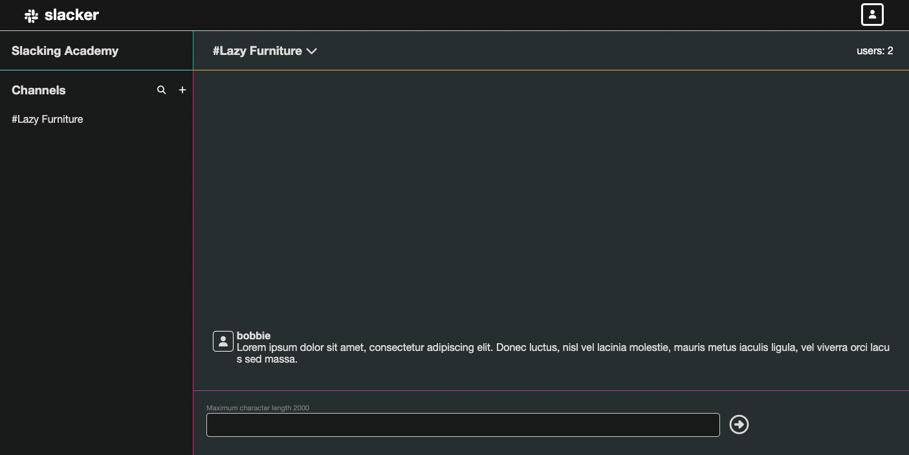
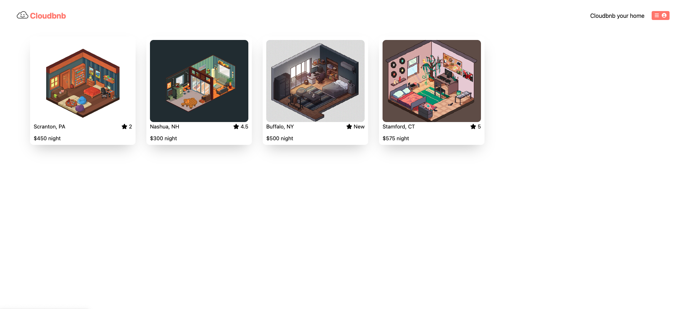
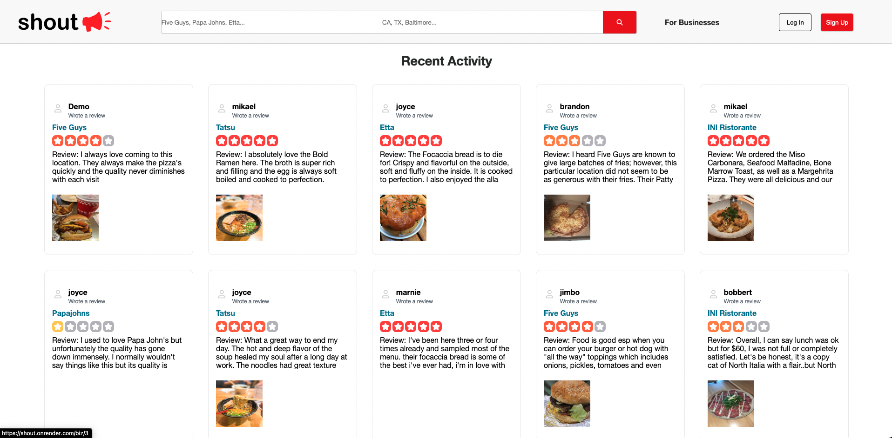

Joyce Kang
Fullstack Software Developer
Fullstack Software Developer
Fullstack Software Engineer through App Academy with a BS in Pure Mathematics. Knowledgeable in JavaScript, Python, HTML, CSS, Express.js, React.js, Redux, Node.js, SQL, and Flask. Built fun projects that include a real-time chat application, a platform that posts and reviews restaurants, and a virtual room reserving website. Always enjoyed being hands on, solving problems/puzzles, and expressing myself in creative ways. Some of my favorite childhood games/hobbies, and even now, are Tetris, Rollercoaster Tycoon, photography, and drumming. Excited to continue on this path of becoming a better software engineer and person!



Slacker
A Slack (chat application) clone developed with Flask and SQLAlchemy backend and React/Redux fronted. Integrated WebSockets through SocketIo to render real-time, bidirectional, and room-based communication between clients and the server. Created transferable data objects from backend to frontend through complex SQL queries using SQLAlchemy ORM. Implemented user authentication using Flask UserMixin Class to verify user credentials which secures the application and manages user sessions seamlessly.
Cloudbnb
An Airbnb clone developed with Express and Sequelize backend and React/Redux frontend. Implemented core CRUD functionalities using Express’ efficient backend with the support of Node.js enabling users to easily handle spots, reviews, and reservations. Coded dynamic DOM algorithms and custom error handling using React-Redux to protect the application from bad user input data. Used PostgreSQL database to operate high volumes of inputted data for optimal performance in a multi-user environment.
Shout!
A Yelp clone developed with a team of four. Python-Flask and SQLAlchemy was used for backend and React/Redux with JavaScript was used for the frontend. Integrated the SQLAlchemy ORM to create a self-built, optimized search functionality and ReactJS frontend to create a feature to search for businesses by name or location. Built frontend using React with Redux and its unidirectional data flow in order to provide reliable DOM rendering with greater quantity of data. Collaborated through Git feature branches for version control and to easily identify changes and bugs on particular features.